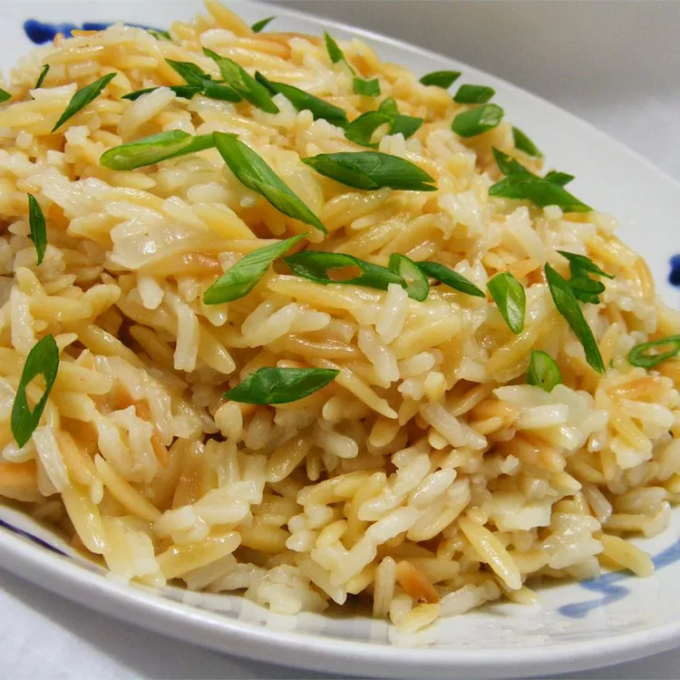

Rice Pilaf

This is the best rice
White rice cooked with a little flavorful oil and chopped onion, and then
simmered with broth. It`s one step up from rice cooked in water, but not
so elaborate that you can`t pull it together on a weeknight.
Ingredients
- 2 tablespoons butter
- ½ cup orzo pasta
- ½ cup diced onion
- 2 cloves garlic, minced
- ½ cup uncooked white rice
- 2 cups chicken broth
Steps
-
Melt butter in a skillet over medium-low heat. Add orzo; cook and stir
until orzo is golden brown.
-
Stir in onion and cook until onion becomes translucent. Add garlic and
cook for 1 minute. Stir in rice and chicken broth, turn heat to high,
and bring to a boil.
-
Reduce heat to medium-low, cover the skillet, and simmer until rice is
tender and liquid has been absorbed, 20 to 25 minutes.
-
Remove from the heat and let stand, covered, for 5 minutes. Fluff with a
fork before serving.